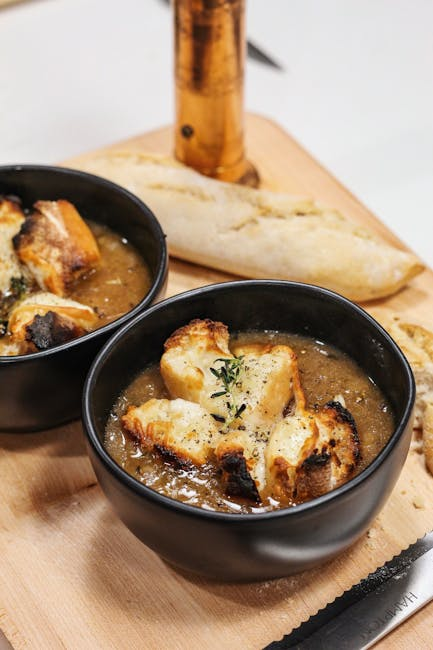
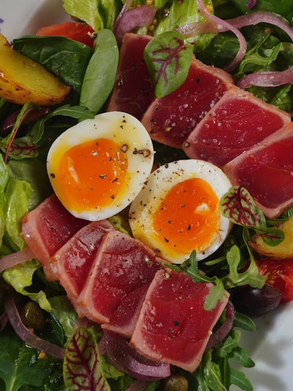
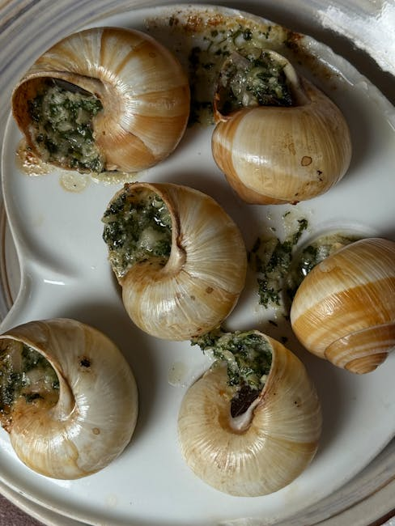
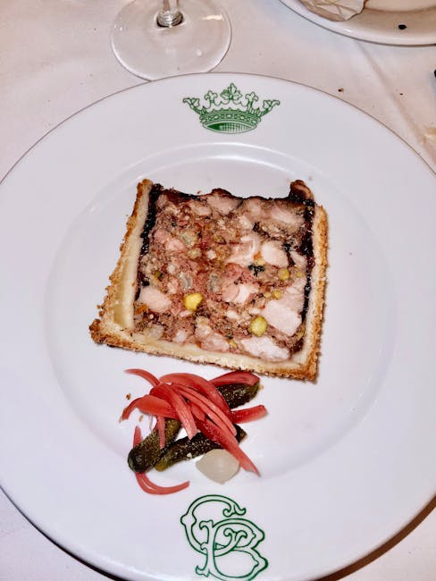
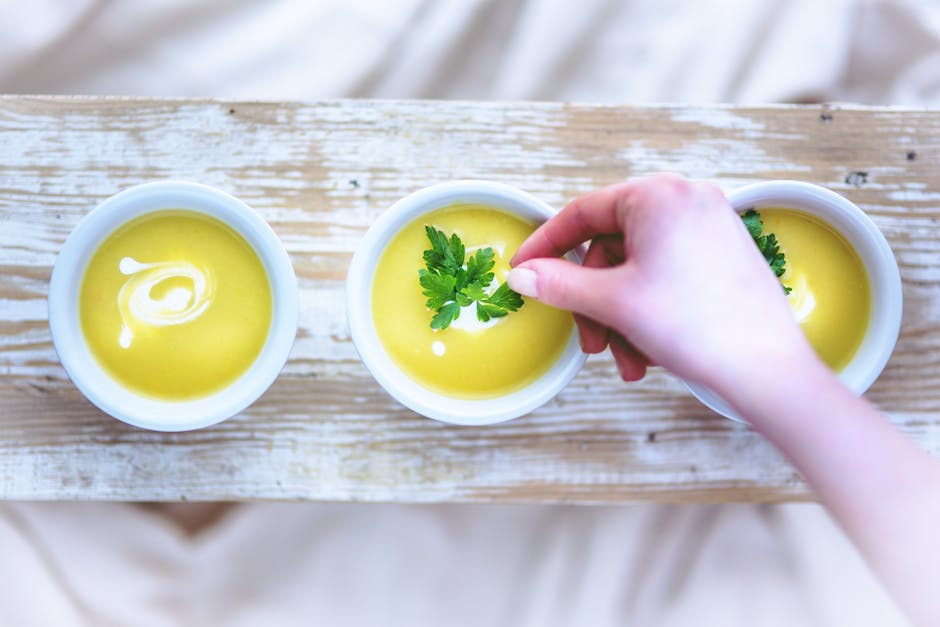
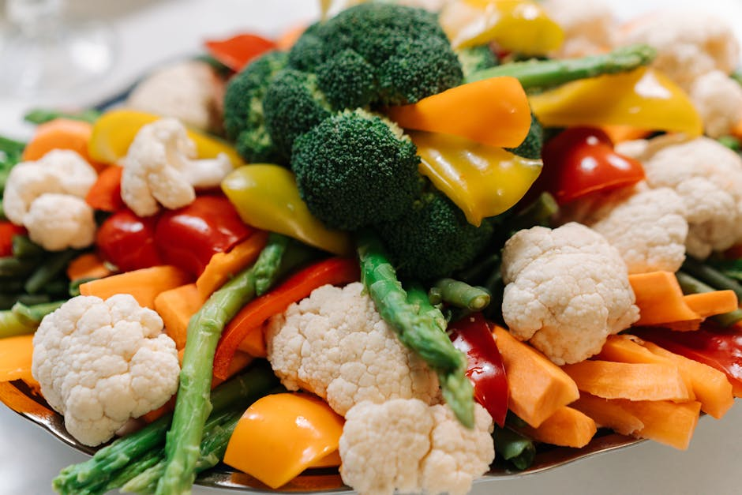

The menu
Curated classic french dishes and artisan pastries, prepared fresh daily with the finest imported ingredients.
Starters

salade nicoise
tuna, olives, haricots verts, tomatoes, and soft-boiled eggs with a dijon mustard vinaigrette.
bd 4.200
escargots de bourgogne
burgundy snails baked in garlic herb butter, served hot with crusty french baguette slices.
bd 5.500
pate de campagne
country-style pork terrine served with cornichons, dijon mustard, and toasted brioche.
bd 4.800
vichyssoise
chilled leek and potato soup, garnished with chives and a drizzle of truffle oil.
bd 3.800
crudites et aioli
seasonal raw vegetables with house-made garlic aioli, tapenade, and olive oil for sharing.
bd 3.000